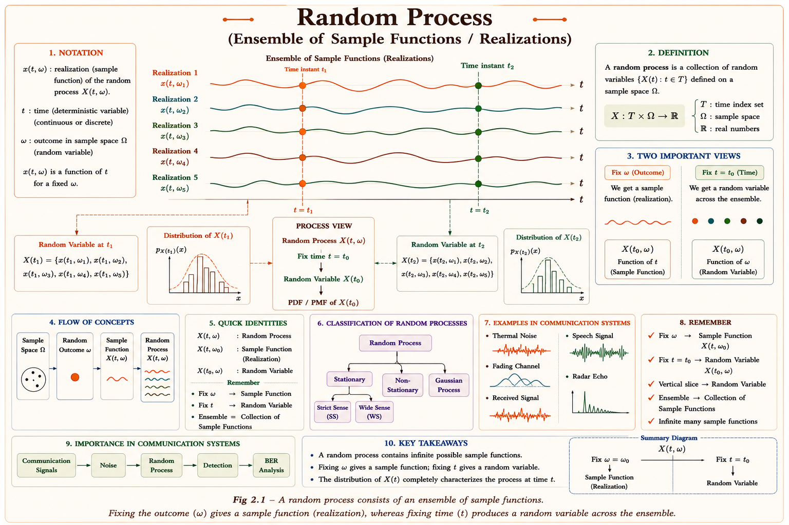
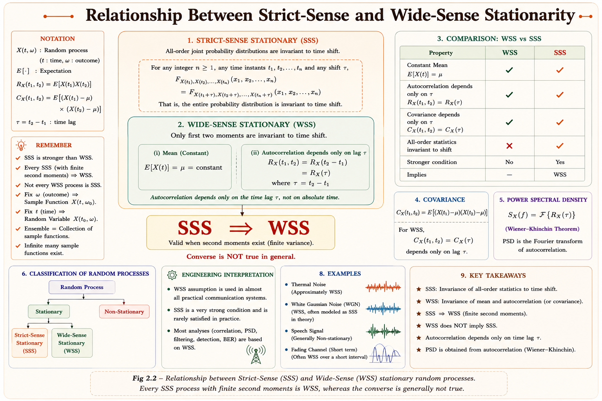
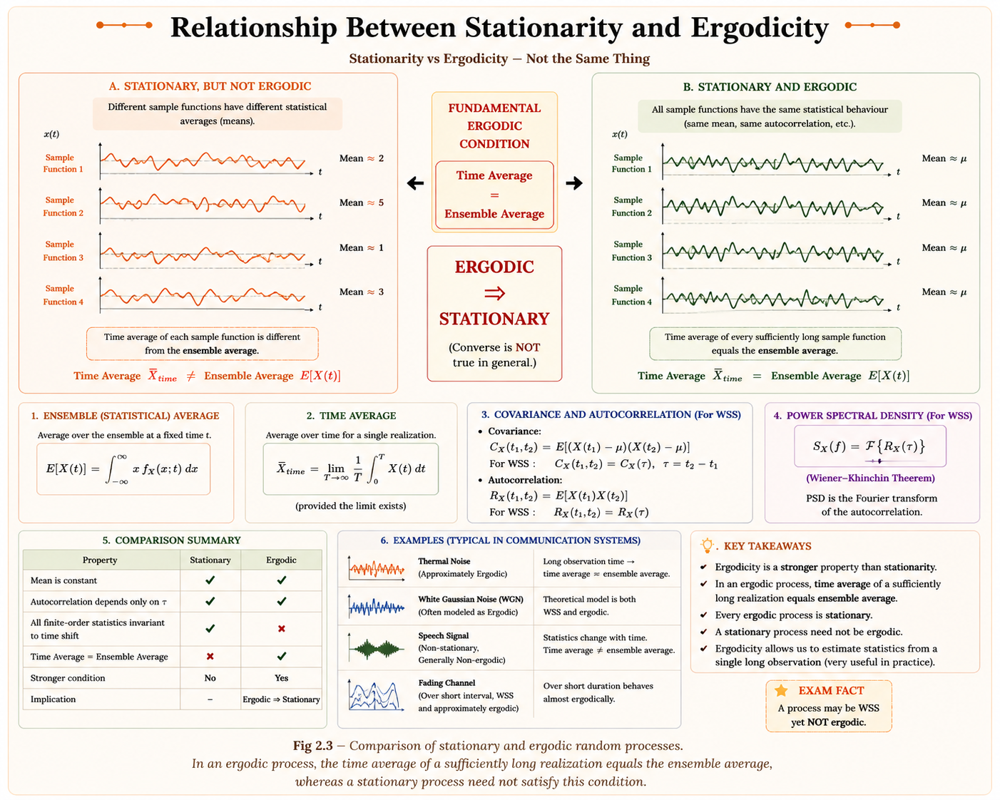
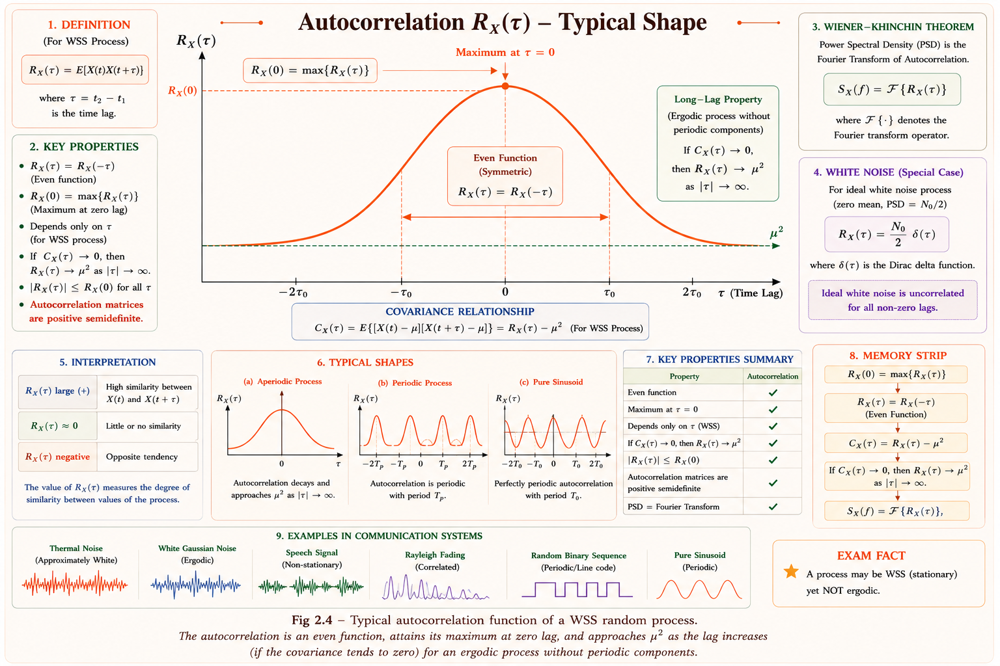

Random process definition, stationarity, ergodicity, mean function, autocorrelation, and cross-correlation — the complete foundation for analysing noise and random signals, built up from first principles with full derivations, intuition, and solved examples for GATE, IES, and PSU exams.
In every communication system, the signal that finally reaches the receiver is never the clean, predictable waveform that left the transmitter. It has picked up thermal noise from resistors, shot noise from semiconductor junctions, fading from a moving wireless channel, and interference from neighbouring systems. None of these disturbances can be written as a fixed function of time — the noise voltage at 9:00:01 AM today will not be the same as the noise voltage at 9:00:01 AM tomorrow, even on the identical circuit. Yet the disturbance is not pure chaos either: its average power, its frequency content, and its statistical "shape" are remarkably predictable. The branch of mathematics built to describe exactly this kind of behaviour — signals that are unpredictable instant-to-instant but statistically regular over time — is the theory of random processes (also called stochastic processes).
A random process generalises the idea of a random variable. A random variable assigns a number to the outcome of a random experiment; a random process assigns an entire time function to the outcome of a random experiment. This single shift in viewpoint — from "one random number" to "one random waveform out of a whole family of possible waveforms" — is what allows engineers to analyse noise, fading channels, and random data streams with the same rigour used for deterministic signals.
Every time you compute SNR (signal-to-noise ratio), bit-error-rate, or channel capacity, you are secretly using the statistical description of a random process — its mean, its autocorrelation, and the power spectral density derived from it. Random process theory is the mathematical machine room behind every noise specification an engineer ever quotes.
Consider a random experiment S with sample space made of outcomes ζ₁, ζ₂, ζ₃, …. For a random process, each outcome ζᵢ is mapped not to a number but to an entire waveform X(t, ζᵢ) defined over all time t. The collection of all possible waveforms — one for every possible outcome of the experiment — is called the ensemble of the random process, and any single waveform from this collection is called a sample function or a realization.

This picture immediately reveals the two-dimensional nature of a random process X(t, ζ): it is a function of both the time variable t and the outcome variable ζ. Fixing one variable while letting the other vary produces four distinct interpretations, summarised below.
| t | ζ | Result | Interpretation |
|---|---|---|---|
| Variable | Variable | X(t, ζ) | The random process itself — the whole ensemble |
| Variable | Fixed (ζᵢ) | X(t, ζᵢ) | A single sample function / realization (an ordinary time signal) |
| Fixed (t₁) | Variable | X(t₁, ζ) | A random variable — the "vertical slice" across the ensemble |
| Fixed (t₁) | Fixed (ζᵢ) | X(t₁, ζᵢ) | A single number (ordinary constant) |
Think of a random process as an infinite stack of radio receivers, all tuned to the same noisy channel, all switched on at the same instant. Each receiver records its own squiggly noise waveform — no two recordings are identical. If you now freeze time at one instant and look across every receiver simultaneously, the set of values you read off is a random variable. The random process is simply the entire stack of receivers considered together, for all time.
A real random process is formally a mapping from a sample space to a family of time functions. For every outcome ζ in the sample space S of an experiment, a deterministic time function X(t, ζ) is assigned. The collection {X(t, ζ)} for all ζ ∈ S, together with a probability description, is the random process. A random process is also frequently called a stochastic process — the two terms are used interchangeably in the standard references.
Random variable X(ζ): maps each outcome to a single number. Random process X(t, ζ): maps each outcome to an entire function of time. A random process can be viewed as a random variable that has been "extended" with an extra time axis, or equivalently, as an infinite family of random variables, one for every instant t.
Q1. Why does this happen? Real noise sources (electron motion, atmospheric
disturbance) are governed by an enormous number of microscopic random events, so the
resulting macroscopic signal can never be predicted exactly — only its statistics can be.
Q2. What if we fix ζ? We collapse the random process into one ordinary,
deterministic time function — a single sample function, no different from any signal
studied in basic signals-and-systems.
Q3. What if we fix t? We collapse the random process into a single random
variable, describable using an ordinary PDF.
Q4. What does an engineer observe in the lab? Only ever one sample
function at a time — the ensemble itself is a mathematical construct used for analysis, not
something that is ever observed all at once.
Before diving into statistical descriptions, it helps to sort random processes by the nature of their time axis and their amplitude (state space). This classification determines which mathematical tools apply — for instance, whether sums or integrals are used to compute averages.
| Type | Time Axis | Amplitude / State | Typical Example |
|---|---|---|---|
| Continuous Random Process | Continuous | Continuous | Thermal noise voltage v(t) |
| Discrete Random Process | Continuous | Discrete | Binary PCM line signal (±1 V only, but defined for all t) |
| Continuous Random Sequence | Discrete | Continuous | Samples of a noise voltage taken every Tₛ seconds |
| Discrete Random Sequence | Discrete | Discrete | A sequence of transmitted bits {0, 1, 0, 0, 1, …} |
"Continuous vs discrete in time" asks: is the process defined at every instant, or only at countable time steps? "Continuous vs discrete in amplitude" asks: can the value be any real number, or only one of a finite/countable set of levels? A digital bit-stream sampled once per clock edge is discrete in both axes; analog noise on a cable is continuous in both.
A random process is called deterministic if future values of any sample function can be exactly predicted from past observed values — for example, X(t) = A cos(ω₀t + θ) where only the phase θ is random; once a few samples fix θ, the entire waveform for all time is known. A process is non-deterministic (truly random / unpredictable) if no such exact prediction is possible even with complete knowledge of the past — thermal noise is the classic example, since every microscopic electron collision contributes independently and unpredictably.
Students often assume "random process" automatically means "totally unpredictable in every sense." In fact a process can have a random parameter (like phase or amplitude) yet still be perfectly predictable in shape once that one parameter is observed — this is precisely the deterministic random process. True non-deterministic processes are unpredictable no matter how much of the past you are given.
A random process is, in general, a moving target: its statistics (mean, variance, joint distributions) can change as time progresses. Stationarity is the property that tames this difficulty — a stationary process has statistics that do not change with an absolute shift of the time origin. This single idea is what allows engineers to design filters and receivers using time-invariant mathematics even though the underlying signal is random.
Almost every formula used for "noise bandwidth," "noise power," or "matched filter SNR" in a communication-systems course silently assumes the noise process is at least wide-sense stationary. Without stationarity, the mean and autocorrelation would be functions of absolute time, and no single number could describe "the noise power" of the channel.
A random process X(t) is strict-sense stationary (SSS) if the joint probability density function of any set of samples is completely unaffected by a shift in the time origin. Formally, for any set of time instants t₁, t₂, …, tₙ and any time shift τ:
This must hold for every n, for every choice of time instants, and for every τ. It is an extremely strong requirement — verifying it in practice would require knowing the complete joint statistics of the process to all orders, which is rarely available. SSS is therefore mostly a theoretical benchmark rather than something checked directly in engineering practice.
Two specific consequences of strict-sense stationarity are used constantly:
Because verifying SSS to all orders is impractical, engineering analysis almost always works with a relaxed and far more useful condition: wide-sense stationarity (WSS). A process is WSS if only two specific statistics — not the full joint PDF — satisfy the stationarity requirement.
WSS only constrains the first moment (mean) and the second moment (autocorrelation) of the process. It says nothing about third-order or higher joint statistics. SSS is therefore a sufficient condition for WSS, but WSS does not imply SSS — a process can satisfy the mean/autocorrelation conditions of WSS while its higher-order statistics still drift with absolute time.

Q1. What if the mean \( E[X(t)] \) varies with t? The process is immediately
non-stationary (fails Condition 1 of WSS) — no matter how well-behaved the autocorrelation
is.
Q2. What if \( R_X(t₁, t₂) \) depends on t₁ and t₂ separately, not just τ = t₂ −
t₁?
The process fails Condition 2 and is non-stationary, even if its mean is constant.
Q3. What does an engineer observe practically? A "stationary-looking"
random signal whose running average and running autocorrelation, computed over sliding
windows of data, settle down to fixed values rather than continuing to drift.
Strict-sense and wide-sense stationarity describe the process across the ensemble — across many sample functions, at one or two fixed time instants. But in the laboratory, an engineer almost never has access to many independent sample functions; typically only one waveform is recorded, for a long stretch of time. Ergodicity is the bridge that lets time-averages computed from one single sample function stand in for ensemble-averages computed across the whole family of sample functions.
Imagine measuring the average height of a population two different ways: (1) line up a thousand different people at one instant and average their heights — an ensemble average; or (2) follow one single person and average their height readings every day for fifty years — a time average. These two numbers have no reason to agree for height (height doesn't fluctuate over one person's lifetime in the same way it varies across a population). For a random process to be ergodic, both averaging procedures must give the same answer.
For a single sample function x(t) observed over a long interval, the time-averaged mean and time-averaged autocorrelation are defined as:
These are ordinary calculus operations performed on one deterministic-looking function of time — no probability or ensemble is involved in computing them. The deep question ergodicity answers is: does this single number equal the corresponding ensemble average, \( E[X(t)] \) or \( R_X(\tau) \), computed (in principle) across the whole family of sample functions?
A WSS process is called mean-ergodic (ergodic in the mean) if the time average of any sample function equals the ensemble mean with probability 1:
A WSS process is correlation-ergodic (ergodic in the autocorrelation) if the time average of x(t)x(t+τ) equals the ensemble autocorrelation \( R_X(\tau) \) for every τ:
Ergodicity is the theoretical justification for almost every lab measurement of "noise power" or "average signal level": an engineer records one waveform on a scope or spectrum analyser for a long time and computes its time average, trusting that this single number represents the statistical mean of the underlying random process. Without ergodicity, that trust would be unjustified.

"Stationary" and "ergodic" are often used loosely as synonyms by beginners, but they answer different questions. Stationarity is about invariance to a shift in the time origin (an ensemble-level property). Ergodicity is about whether time averages from one sample function can replace ensemble averages. Ergodicity always requires stationarity, but stationarity does not guarantee ergodicity. A process whose ensemble has wildly different-looking sample functions can be perfectly stationary yet not ergodic.
Q1. What if a process is ergodic? A single, sufficiently long sample
function is enough to estimate \( \eta_X \) and \( R_X(\tau) \) — no need to average across
multiple
independent recordings.
Q2. What if a process is stationary but not ergodic? Different sample
functions can have permanently different time averages, so one recording cannot represent
the whole ensemble.
Q3. What does an engineer observe practically? Repeatable, consistent
measured statistics regardless of which segment of the recording — or which physically
identical device — was used to take the measurement; that consistency is the practical
signature of ergodicity.
The simplest statistical descriptor of a random process is its mean function, also called the ensemble average or the first moment. It answers the question: "if I freeze time at instant t and average across every possible sample function, what value do I get?"
Here X(t) at a fixed t is treated exactly like an ordinary random variable, and \( E[X(t)] \) is computed with the usual expectation integral, using the first-order density \( f_X(x; t) \) of the process at that instant. In general, \( \eta_X \)(t) can be a function of time — different time instants can have different ensemble means. If the process is at least first-order stationary (and certainly if it is WSS), this reduces to a single constant \( \eta_X \), independent of t.
The mean function is the "DC value" or average level of the random process at each instant. For a zero-mean noise process, \( \eta_X \)(t) = 0 for all t, meaning the noise has no steady offset — it fluctuates symmetrically around zero. A nonzero, time-varying mean would indicate a slowly-changing bias riding underneath the random fluctuation.
Let X(t) = A cos(ω₀t + Θ), where A and ω₀ are constants and Θ is uniformly distributed over (0, 2π) — a standard model for an oscillator with unknown (random) starting phase.
The mean is exactly zero for every t — averaging cos over a uniformly random phase cancels out completely, regardless of which instant you look at. This is why this process is at least first-order stationary, and it is in fact the standard textbook example of a WSS random process.
The mean function describes a random process using only one instant of time at a time. It says nothing about how the process at one instant relates to the process at another instant — whether the waveform changes slowly and smoothly, or jumps around erratically from one moment to the next. The autocorrelation function fills exactly this gap: it measures the statistical similarity (correlation) between the process at two different time instants.
For a process that is at least wide-sense stationary, this depends only on the time difference τ = t₂ − t₁, and is written as a function of one variable:
Autocorrelation measures "how much does knowing X(t) tell you about X(t+τ)?" When τ = 0, you are correlating the signal with an exact copy of itself — maximum possible similarity, which is why \( R_X(0) \) is always the largest value the function can take. As τ grows, the two instants drift further apart in time, the process typically "forgets" its earlier value, and \( R_X(\tau) \) decays toward the squared mean. The rate of this decay tells you how fast the random process changes — a slowly-decaying \( R_X(\tau) \) means a slowly-varying process, while a sharply-peaked \( R_X(\tau) \) (decaying quickly) means a fast-fluctuating, noise-like process.

These five properties are the most heavily examined facts in this entire chapter — each one has a clean physical reason behind it.
\( R_X(0) \) = \( E[X^2(t)] \) is the total average power of the random process. This single equality is the bridge between the time-domain autocorrelation and the frequency domain: by the Wiener–Khinchin relation, \( R_X(\tau) \) and the power spectral density \( S_X(f) \) form a Fourier transform pair, so \( R_X(0) \) also equals the area under \( S_X(f) \) — the total power across all frequencies.
Mistake 1: Writing \( R_X(\tau) \) = \( E[X(t)X(t-\tau)] \) vs \(
E[X(t)X(t+\tau)] \) and treating
them as different formulas — for a WSS process they are equal because of even symmetry, so
either convention gives the same function.
Mistake 2: Confusing \( R_X(0) \) with the mean \( \eta_X \) — \( R_X(0) \) is
the mean-square
value (a "power" quantity, always ≥ \( \eta_X^2 \)), not the mean itself.
Mistake 3: Assuming \( R_X(\tau) \) always decays to zero — it decays to
\( \eta_X^2 \) (zero only when the process is zero-mean).
Autocorrelation describes a process against a time-shifted copy of itself. Many engineering problems instead need to know how two different random processes — say, a transmitted signal and a received echo, or noise on two separate sensors — relate to each other. The cross-correlation function generalises the autocorrelation idea to a pair of jointly-defined random processes X(t) and Y(t).
For two processes that are jointly WSS, this again collapses to a single-variable function of the time difference τ = t₂ − t₁:
Three related but distinct relationships between two random processes are frequently mixed up by students — each is a progressively different statement.
| Relationship | Defining Condition | Strength |
|---|---|---|
| Uncorrelated | \( R_{XY}(\tau) \) = \( \eta_X \) \( \eta_Y \) (equivalently, covariance \( C_{XY}(\tau) \) = 0) | Weakest |
| Orthogonal | \( R_{XY}(\tau) \) = 0 for the τ of interest | Medium |
| Statistically Independent | Joint PDF factors: \( f_{XY}(x,y) \) = \( f_X(x) \)·\( f_Y(y) \) | Strongest |
Statistical independence always implies uncorrelatedness, but the converse is false in general — two processes can be uncorrelated (zero covariance) while still being statistically dependent in a nonlinear way. Also, "orthogonal" (\( R_{XY} \) = 0) is not the same as "uncorrelated" (\( R_{XY} \) = \( \eta_X \) \( \eta_Y \)) unless at least one of the two processes is zero-mean — if both means are zero, uncorrelated and orthogonal become identical conditions.
If \( Z(t) = X(t) + Y(t) \), the autocorrelation of the sum brings in both processes' individual autocorrelations plus their cross terms:
If X(t) and Y(t) are uncorrelated and at least one is zero-mean (so the cross terms vanish), this simplifies to the familiar "powers add" rule:
This is the single most exam-critical block of the chapter — almost every numerical problem on random processes reduces to applying one or more of these formulas correctly.
Mean (1st moment, constant for WSS) → R(τ) autocorrelation (2nd moment, function of lag only for WSS) → Covariance (R minus mean²) → Variance (covariance at τ = 0) → Ergodicity (time average replaces ensemble average). Walking through MR-CoVE in order reconstructs the entire statistical-characterization pipeline of this chapter from memory.
(i) Mean function:
The mean is zero for every t — confirming first-order stationarity.
(ii) Average power:
Average power = A²/2 = 10²/2 = 50, exactly matching the familiar result for a sinusoid of amplitude A. This confirms \( R_X(0) \) = \( E[X^2(t)] \) = 50 — a number we will reuse in Example 1.2.
Step 1 — Set up the expectation:
Step 2 — Apply the product-to-sum identity 2cos A cos B = cos(A−B) + cos(A+B):
Step 3 — Evaluate each term: the first term has no Θ, so its expectation is itself; the second term averages to zero over uniform Θ (identical reasoning to Example 1.1):
\( R_X(0) \) = 50 cos(0) = 50 — matches the average power found in Example 1.1, confirming Property 3. \( R_X(\tau) \) = 50cos(100τ) = 50cos(−100τ) = \( R_X(−\tau) \) since cosine is even, confirming Property 2. Also |\( R_X(\tau) \)| ≤ 50 = \( R_X(0) \) for all τ, confirming Property 1. Note also that \( R_X(\tau) \) is itself periodic — consistent with Property 5, since X(t) contains a periodic component.
Condition 1 (constant mean): Given as zero-mean, so \( E[X(t)] \) = 0 for all t — a constant. Condition 1 satisfied.
Condition 2 (autocorrelation depends only on τ): Let τ = t₂ − t₁. Then |t₁ − t₂| = |τ|, so:
The expression depends only on the time difference τ, not on the absolute values of t₁ or t₂ individually. Condition 2 satisfied.
Conclusion: the process is WSS. As a bonus check, \( R_X(0) \) = 4 (average power), and \( R_X(\tau) \) decays exponentially toward 0 as |τ| → ∞ — consistent with \( \eta_X^2 \) = 0²= 0, confirming Property 4 for a zero-mean process.
Since X(t) and Y(t) are uncorrelated and zero-mean, the cross terms vanish: \( R_{XY}(\tau) \) = \( R_{YX}(\tau) \) = \( \eta_X \)\( \eta_Y \) = 0.
Setting τ = 0:
This is the formal justification for "signal power + noise power" addition rules used throughout communication-system link budgets — it only holds because the two processes are uncorrelated and at least one is zero-mean.
Ensemble mean: \( \eta_X \) = \( E[X(t)] \) = \( E[A] \) = 3 for every t.
Time average of one sample function: for a fixed outcome, x(t) = a (a single, fixed number for all time), so:
The time average equals a, the particular value A happened to take for that sample function — not necessarily 3.
Conclusion: NOT mean-ergodic. Since Var(A) = 5 ≠ 0, different sample functions give different time averages (different values of a), so no single sample function's time average can represent \( \eta_X \) = 3 for the whole ensemble. This is the textbook example of a process that is WSS but not ergodic.
The following topics consistently appear in GATE EC (Communication Systems / Probability section) and IES E&T:
A random process X(t) is wide-sense stationary if:
Explanation: Option (A) describes SSS, a much stronger condition. WSS requires only two things: \( E[X(t)] \) = constant, and \( E[X(t)X(t+\tau)] \) depending on τ alone. A process can satisfy (B) while still failing (A), since higher-order statistics are left unconstrained.
For a WSS random process X(t) with autocorrelation \( R_X(\tau) \), which of the following is always true?
Explanation: \( R_X(0) \) = \( E[X^2(t)] \) is the mean-square value, and no time-shifted version of the process can correlate with itself more strongly than the unshifted signal does with itself. \( R_X(\tau) \) is even (not odd), and \( R_X(0) \) literally equals the average power, so (D) is false as well.
Consider the following statements about a WSS random process: 1. Every ergodic process must be stationary. | 2. Every stationary process must be ergodic. | 3. Ergodicity allows time averages from one sample function to replace ensemble averages.
Explanation: Statement 1 is true — ergodicity is defined only meaningfully for stationary processes, so it presupposes stationarity. Statement 2 is false — a process like X(t) = A (a random constant) is WSS but not ergodic, as shown in Example 1.5. Statement 3 is the entire practical purpose of the ergodicity property and is true.
If two random processes X(t) and Y(t) are statistically independent, then which of the following statements is correct?
Explanation: Statistical independence is the strongest of the three relationships and always implies uncorrelatedness (\( R_{XY}(\tau) \) = \( \eta_X \)\( \eta_Y \)), but the converse is false — uncorrelated does not imply independent in general. Orthogonality additionally requires \( R_{XY}(\tau) \) = 0, which needs at least one mean to be zero — not guaranteed just from independence, so (A) is not always true.
SSS requires the entire joint PDF to look the same after a time shift — a complete statistical fingerprint match. WSS only "watches" two specific quantities — the mean and the autocorrelation. If both of those stay put under a time shift, that is enough to call the process WSS, even if you know nothing about its higher-order behaviour.
Ensemble average must match Recorded time average, Given that the process is stationary, Only then can one sample function stand in for the whole ensemble. If any letter fails — especially the "Given stationary" step — ergodicity cannot even be discussed meaningfully.
Have a question on stationarity, ergodicity, mean function, autocorrelation, or cross-correlation? Type below or pick a suggestion.
\( X(t,\zeta) \) maps outcomes to entire time functions, not single numbers. Fixing \( \zeta \) gives a sample function; fixing \( t \) gives a random variable. Ensemble = all possible sample functions.
SSS: all-order joint PDFs invariant to time shift. WSS: only mean is constant and \( R_X(t_1,t_2) \) depends only on \( \tau \). SSS \( \implies \) WSS; WSS does not imply SSS.
Time averages of one sample function equal ensemble averages. Mean-ergodic: \( \langle x(t) \rangle = \eta_X \). Correlation-ergodic: \( \langle x(t)x(t+\tau) \rangle = R_X(\tau) \). Requires stationarity but is stronger than it.
\( \eta_X(t) = E[X(t)] \) — the ensemble average at each instant. Constant (\( \eta_X \)) for stationary processes. Linear: propagates through LTI systems by convolution with \( h(t) \).
\( R_X(0) = E[X^2(t)] \) = average power (maximum value). Even function: \( R_X(\tau)=R_X(-\tau) \). \( R_X(\infty) = \eta_X^2 \) for non-periodic processes.
\( R_{XY}(\tau) = R_{YX}(-\tau) \); not generally even. \( |R_{XY}(\tau)| \le \sqrt{R_X(0)R_Y(0)} \). Uncorrelated: \( R_{XY}=\eta_X\eta_Y \). Orthogonal: \( R_{XY}=0 \). Independent \( \implies \) uncorrelated (not conversely).
All technical content is derived from the following standard textbooks and learning resources. All explanations, derivations, diagrams and examples are original to Aarova AI.